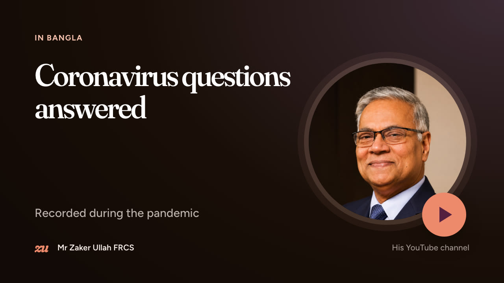
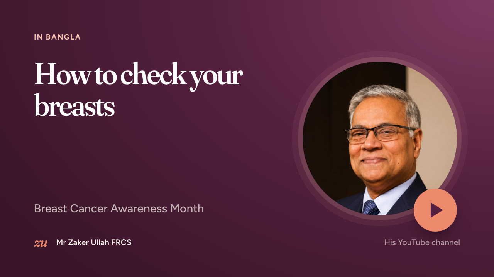
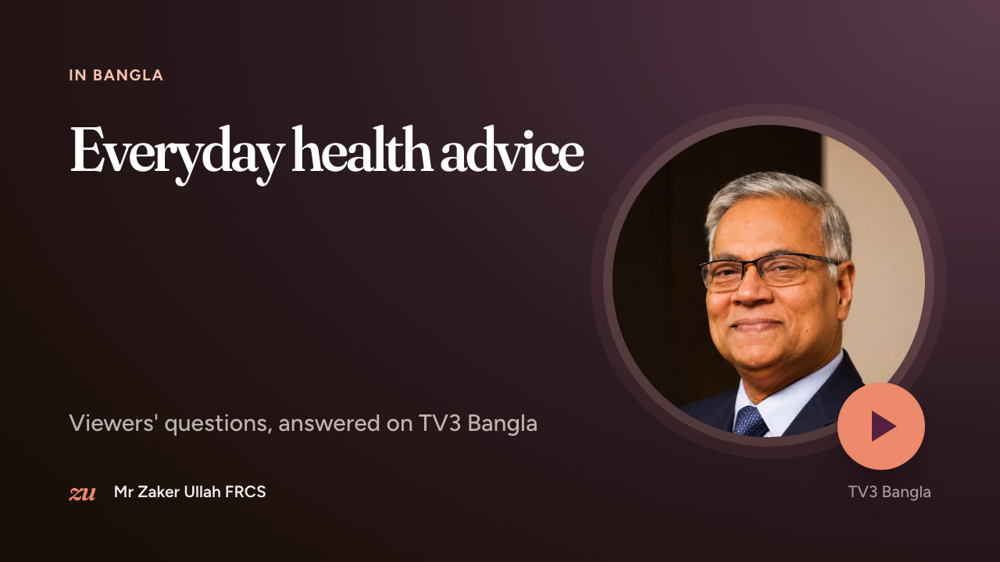

Watch

The video loads from YouTube when you press play. More on YouTube
More videos


Appointments
Let’s get you a clear answer
Most breast symptoms turn out to be nothing serious. A single appointment is usually all it takes to know for sure. Insured and self-funding patients are welcome at all three clinics.
Telephone020 8936 1263
SecretaryMs Juliet Willes
ClinicsThe Holly, Buckhurst Hill IG9 · Canary Wharf E14 · St Bartholomew’s EC1